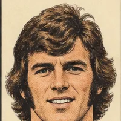
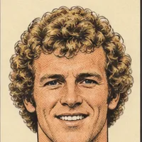
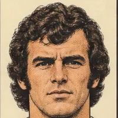

Pick Team
Team selection that knows who’s turning up
Choose 5, 7, 9 or 11-a-side and a formation to suit, then fill each position. Attendance replies sit right next to every name, so you can see who’s attending, not attending or still unconfirmed before you pick.
5-a-side7-a-side9-a-side11-a-side
Players
Your squad, drawn like comic heroes
Give every player a number, a nickname and a position from goalkeeper and sweeper-keeper to regista, poacher and false nine. Pick one of the retro comic illustrations or upload a photo. Each profile updates itself with goals, assists and appearances whenever a report is published.



Results
A proper match report, every single week
Every game is saved to your match archive with the score, scorers, assists, line-ups, manager’s and coach’s comments, full match stats and a minute-by-minute commentary. Tap Post to WhatsApp and it’s in the group chat, nicely formatted.
Player of the Match
Let the touchline have its say
Three awards every game: Manager’s, Coach’s and a Community vote for parents, members and supporters. Votes are confidential and can’t be changed, and the report publishes when voting closes.
Star
Man!
Club
Fixtures, training & the whole club in one place
Add fixtures with one-tap directions in Apple Maps or Google Maps. Set up training as one-off sessions or recurring schedules. Players and parents confirm attendance in a tap. Show off your club crest and give your sponsor a panel of their own.
Messages
Never miss the final whistle
Send announcements to the whole team as push notifications. Match events, attendance requests and voting alerts arrive instantly, and every update stays in the in-app inbox in case anyone missed it.